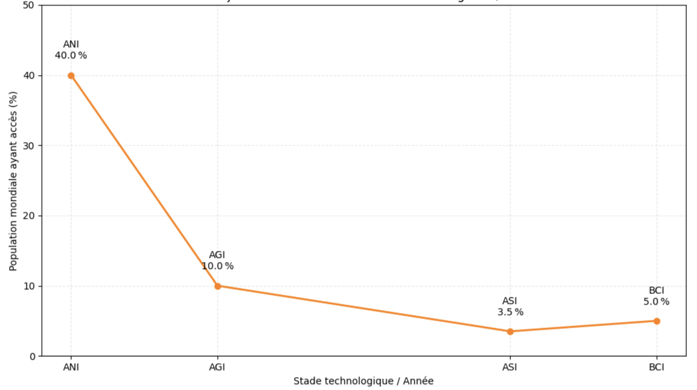

Vers des inégalités sociales croissantes

Un décrochage hérité de la fracture numérique
L’intelligence artificielle, bien que présentée comme une technologie universelle et diffuse, reste aujourd’hui inégalement accessible selon les ressources économiques, culturelles, éducatives et infrastructurelles. Plusieurs facteurs nourrissent cette inégalité :
-
L’éducation : les compétences nécessaires pour comprendre et manier efficacement les outils d’IA (statistiques, langage informatique, prompt engineering, esprit critique sur les biais algorithmiques) sont aujourd’hui concentrées dans les mains d’une minorité formée ou accompagnée.
-
La fracture numérique persistante : selon l’UIT, 32% de l’humanité n’avait pas encore accès à Internet en 2021, malgré 25 ans de déploiement global. Ce retard se répercute mécaniquement sur l’accès aux interfaces IA qui en dépendent.
-
Le coût d’usage de l’IA : même si certains outils sont gratuits, les versions avancées (ex. API d’OpenAI, services cloud, solutions SaaS d’IA générative) restent payantes et donc inaccessibles aux individus ou structures à faibles revenus.
-
L’emploi : le redéploiement vers des métiers “augmentés” suppose une capacité à se former, s’adapter, voire se reconvertir, ce qui est plus difficile pour les catégories les plus vulnérables.
Un phénomène qui va s’accélérer avec les interfaces "godlike"
Comme Internet avant lui, l’IA est appelée à devenir omniprésente, mais son adoption ne suivra pas nécessairement un chemin linéaire et inclusif. Les prochaines interfaces (par exemple les assistants IA permanents embarqués, les smartphones post-écrans ou les neurointerfaces grand public) pourraient démultiplier les capacités cognitives et décisionnelles… mais uniquement pour ceux qui y auront accès.
L’inégalité ne sera donc plus seulement dans l’accès à l’information, mais dans la capacité à agir, décider, prédire, convaincre. Il s’agit d’un changement de paradigme dans la distribution des pouvoirs individuels et organisationnels.
Stades technologiques attendus
| Stade | Période | Description |
|---|---|---|
| ANI | Aujourd’hui | IA spécialisée (chatbots, recommandation, vision) |
| AGI | ~2025–2030 | Intelligence polyvalente, raisonnement transversal (AIMultiple, Toolify, LinkedIn) |
| ASI | ~2027–2040 | Progression vers ASI et singularité — progrès explosif et potentiellement incontournable : intelligence supralocale, auto‑améliorante, problématique de l’alignement |
| BCI / ICM | Fin 2040+ | Interfaces neurales grand public, augmentation cognitive directe |
Evolutions des capacités IA et BCI dans le temps (UCN)

UCN \= Unité Cognitive Normalisée* : un indice composite permettant de quantifier les capacités cognitives des IA et l’impact des interfaces cerveau-machine (BCI) sur une même échelle. Cette échelle est basée sur des benchmarks reconnus* :
- Pour l’AGI et l’ASI : des tests comme l’ARC‑AGI mesurant la complexité cognitive via le Model of Hierarchical Complexity (MHC) (adultdevelopment.org, arXiv, Wikipedia).
- Pour les BCI : le Information Transfer Rate (ITR), exprimé en bits/seconde, standard pour quantifier le débit info des interfaces cerveau-ordinateur (PMC).
- Référence centrale* : 1 UCN \= niveau cognitif humain*, tel que défini par la référence AGI (\~parité humaine).
Projection de l'accès mondial aux technologies IA/BCI

La lecture croisée des deux graphiques met en évidence une dynamique paradoxale et préoccupante entre l’évolution des technologies IA/BCI et leur accessibilité mondiale. D’un côté, les capacités cognitives des systèmes augmentent de manière spectaculaire à chaque saut technologique : l’IA étroite (ANI) atteint déjà une performance de 0,30 UCN, avant que l’IA générale (AGI) ne franchisse le seuil du niveau humain (1 UCN), et que l’IA surhumaine (ASI) puis les interfaces cerveau-IA (BCI) n’en repoussent encore les limites. De l’autre côté, plus ces technologies deviennent puissantes, plus leur accès semble réservé à une minorité : 40 % de la population mondiale accède aujourd’hui à des formes d’IA étroite, mais seuls 10 % auraient potentiellement accès à l’AGI, 3,5 % à l’ASI et à peine 5 % aux technologies BCI.
Cette dissociation entre puissance et accessibilité suggère une trajectoire technologique à haut risque : à mesure que l’intelligence artificielle dépasse les capacités humaines, elle devient paradoxalement moins partagée, concentrée entre les mains de quelques acteurs ou pays. Cela pose une double problématique : celle de l’équité technologique entre populations, mais aussi celle de la concentration du pouvoir cognitif, décisionnel et économique. La maîtrise de ces technologies, si elle n’est pas accompagnée de politiques d’inclusion et de régulation ambitieuses, pourrait accélérer des formes d’exclusion numérique, cognitive et politique d’une partie croissante de l’humanité.
La question n’est donc pas seulement de savoir jusqu’où l’IA peut aller, mais pour qui elle ira.